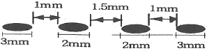

침투비파괴검사기사 (2016-10-01 기출문제)
1과목: 비파괴검사 개론
1. 다음 비피괴검사법 중 강판의 도금두께 측정에 적합한 것은?
- 방사선투과검사
- 초음파탐상검사
- 침투탐상검사
- 와전류탐상검사
(정답률: 69%)

2. 감마선(γ선)투과검사에 대한 설명으로 옳은 것은?
- 외부의 전원이 필요하다.
- 열려 있는 작은 결함에도 사용할 수 있다.
- 360° 또는 일정 방향으로 투사의 조절이 불가능하다.
- 투과 능력은 사용하는 동위원소가 달라도 모두 같다.
(정답률: 61%)
3. 초음파탐상시험에 사용되는 탐촉자의 진동자 재질 중 티탄산바륨 탐촉자의 단점으로 옳은 것은?
- 물에 녹는다.
- 내마모성이 낮다.
- 송신효율이 나쁘다.
- 화학적으로 불안정하다.
(정답률: 57%)
4. 자분탐상시험과 비교할 때 침투탐상시험을 우선적으로 적용할 수 있는 가장 큰 이유는?
- 시험체의 재질에 대한 제한이 적기 때문에
- 미세한 균열의 검출감도가 우수하기 때문에
- 열처리 직후의 검사에서 신뢰성이 높기 때문에
- 표면 전처리의 정도가 높지 않아도 되기 때문에
(정답률: 80%)
5. 각종 비파괴검사법에서 시험체 내의 결함정보를 얻을 때 의사지시를 만들거나 또는 결함검출 능력을 저하시키는 요인과의 연결이 잘못된 것은?
- 방사선투과시험 : 산란선
- 초음파탐상시험 : 표면 거칠기
- 자분탐상시험 : 전극 지시
- 와전류탐상시험 : 적산효과
(정답률: 64%)
6. 마우러 조직도(maurer diagram)란?
- 주철에서 C와 Si 양에 따른 주철의 조직 관계
- 주철에서 C와 P양에 따른 주철의 조직 관계
- 주철에서 C와 Mn 양에 따른 주철의 조직 관계
- 주철에서 C와 S양에 따른 주철의 조직 관계
(정답률: 51%)
7. 팽창계수가 아주 적어 시계 태엽, 정밀기계 부품으로 사용하는 것은?
- 인바
- 고망간강
- 탕갈로이
- 고규소강
(정답률: 60%)
8. 알루미늄(Al) 합금에 대한 설명 중 틀린 것은?
- Y 합금의 주요 성분은 Al-Cu-Ni-Mg이다.
- 라우탈의 주요 조성은 Al-Cu-Si 계 합금이다.
- Al에 약 10%Mo을 첨가한 합금을 하이드로날륨이라 한다.
- Al-Si 합금계를 실루민이라 하며 개량처리하여 사용한다.
(정답률: 56%)
9. 용융점이 높아 융해가 곤란하여 주로 분말야금법으로 성형하는 금속으로 고속도강의 첨가 원소로도 사용되는 것은?
- W
- Ag
- Au
- Cu
(정답률: 71%)
10. 마그네슘 합금의 특성이 아닌 것은?
- 가벼운 금소이다.
- 기계 가공성이 좋다.
- 비강도가 커서 항공 우주용 재료로 적합하다.
- 소성 가공성이 아주 용이하여 상온 변형이 쉽다.
(정답률: 74%)
11. 컵 앤 콘(Cup and Cone) 현상은 어떠한 파괴변형 과정을 말하는가?
- 크리프파괴
- 피로파괴
- 연성파괴
- 취성파괴
(정답률: 47%)
12. 다음의 강 중 탄소(C)의 양이 가장 많은 것은?
- 연강
- 경강
- 공정주철
- 탄소공구강
(정답률: 55%)
13. 스프링강의 구비조건으로 적합하지 않은 것은?
- 피로저항이 커야 한다.
- 탄성한계가 높아야 한다.
- 소르바이트 조직이 좋다.
- 충격자항이 작아야 한다.
(정답률: 60%)
14. 다음 중 Cu-Zn 합금에 관한 설명으로 옳은 것은?
- α의 결정형은 면심입방격자이며, β의 결정형은 체심입방격자이다.
- 공업용으로 사용하는 황동은 Zn이 최대 60%이상 함유한다.
- 황동에서는 α, β, γ, δ, ε, η, θ의 7개상이 상태도에 나타난다.
- Cu에 Zn이 35%를 넘으면 β상이 나오므로 경도와 강도가 낮아진다.
(정답률: 56%)
15. 오스테나이트계 스테인리스강에 대한 설명으로 틀린 것은?
- 인성, 연성, 내식성을 갖는다.
- 결정구조는 BCC이고, 자성체이다.
- 고용화 열처리 상태에서 오스테나이트 조직이다.
- Cr 12~26%, Ni 6~22%를 함유하는 Fe-Cr-Ni 합금이다.
(정답률: 60%)
16. 직류 아크 용접기를 사용할 경우에 전극에서 발생하는 아크열에 대해 올바르게 설명한 것은?
- 양극(+) 측의 발열량이 높다.
- 음극(-) 측의 발열량이 높다.
- 양극(+), 음극(-) 측의 발열량이 같다.
- 전류가 크면 양극(+) 측의 발열량이 높고, 작으면 음극(-) 측의 발열량이 높다.
(정답률: 50%)
17. 용접 결함의 분류 중에서 구조상 결함에 해당하는 것은?
- 변형
- 기공
- 인장강도의 부족
- 용접 금속부 형상이 부적당
(정답률: 24%)
18. MIG 용접의 전류밀도는 TIG 용접의 몇 배 정도인가?
- 2배
- 4배
- 6배
- 10배
(정답률: 48%)
19. 아크 전압 30V, 아크 전류 300A, 용접속도 10cm/min로 용접 시 발생하는 용접 입열은 몇 Joule/cm인가?
- 18000
- 36000
- 54000
- 90000
(정답률: 61%)
20. 납땜에 사용되는 용제가 갖추어야 할 조건으로 틀린 것은?
- 청정한 금속면의 산화를 촉진시킬 것
- 모재나 땜납에 대한 부식 작용이 최소한일 것
- 모재의 산화 피막과 같은 불순물을 제거하고 유동성이 좋을 것
- 땜납의 표면 장력을 낮추어서 모재와의 친화력을 높일 것
(정답률: 77%)
2과목: 침투탐상검사 원리
21. 다음 침투탐상시험에 대한 설명 중 잘못된 것은?
- 침투탐상시험은 검사원의 숙련도에 따라 영향을 받는다.
- 침투탐상시험은 강자성체에만 적용하는 시험이다.
- 침투탐상시험 표면 결함을 검출하는 데만 사용한다.
- 침투탐상시험은 금속, 비금속에 관계없이 거의 모든 재료의 표면검사에 사용할 수 있다.
(정답률: 78%)
22. 침투탐상시험에서 침투제가 시험부에 부착함으로써 생기는 침투제의 손실을 뜻하는 용어는?
- Dragout
- Bleedout
- Dip rinse
- Blotting
(정답률: 41%)
23. 침투탐상시험에서 결함 지시모양을 형성하기 위한 무현상법의 원리로서 올바른 것은?
- 미세분말에 의한 모세관 현상 이용
- 가열에 의한 침투액과 공기의 팽창 이용
- 자력에 의한 결함 체적 확대를 이용
- 기계적 힘으로 결함 체적 확대를 이용
(정답률: 60%)
24. 침투탐상시험 중 표면 상에 둥글거나 거의 둥글게 나타나는 결함 지시는 어떤 결함의 지시인가?
- 피로 균열
- 기공
- 용접 lap
- Hot tear
(정답률: 74%)
25. 침투탐상시험에 사용하는 현상제가 갖추어야 할 특성이 아닌 것은?
- 습식 현상제는 현탁성이 좋아야 한다.
- 화학적으로 안정되며 부식성이 없어야 한다.
- 형광침투액을 사용할 때는 자외선에 의해 형광을 발하여야 한다.
- 현상막에 의한 결함지시 모양의 확대성이 좋아야 한다.
(정답률: 49%)
26. 침투제의 적용에 앞서서 시행하는 부품의 세척 방법에는 여러 가지가 있는데 이 중 현실적으로 권고되고 있는 방법은?
- 샌드 또는 그리트(grit) 브라스팅
- 용제 또는 화학물질이 들어있는 탱크에 침지
- 증기세척
- 물과 청정제가 혼합된 매체를 이용한 기계처리
(정답률: 46%)
27. 침투탐상검사에서 전처리를 할 때 주의사항으로 설명이 잘못된 것은?
- 고형화된 오염물의 제거에는 시험체를 용제속에 완전히 침지시켜야 한다.
- 항공기 부품에서는 그라인딩, 블라스팅 같은 방법은 제한된다.
- 물로 시험체를 세척했다면 완전하게 건조시켜야 한다.
- 화학적인 방법일 때는 수소취성 균열이나 응력부식균열을 유발해서는 안된다.
(정답률: 60%)
28. 탐상할 부위의 표면으로부터 그리스를 제거하기 위한 방법으로서 권장할 만한 것이 아닌 것은?
- 증기 세척
- 알칼리 세척
- 용매 세척
- 뜨거운 물에 담글 것
(정답률: 44%)
29. Kr-85를 이용하는 침투탐상검사 방법으로, 일반적인 침투탐상검사에서 사용되는 현상제 대용으로 공업용 X-필름을 시험체에 부착하여 감광된 필름상을 보고 결함지시의 유무를 알 수 있으며, 안전관리에 중점을 두고 해야 되는 침투탐상방법은 무엇인가?
- 휘발성 액체법
- 기체 방사성 동위원소법
- 역형광법
- 여과 입자법
(정답률: 73%)
30. 품질관리를 위한 탐상제의 점검 중 건식현상제는 일반적으로 어떻게 점검하는 것이 효율적인 방법인가?
- 보통 육안으로 이물질의 혼입이 없는지 등을 점검한다.
- 농도와 비중을 측정하여 점검한다.
- 용해시켜 침투제 오염 여부를 점검한다.
- 온ㆍ습도계를 이용하여 규정치 내에 있는지 점검한다.
(정답률: 73%)
31. 다음 중 다공성 재질이나 유리, 반도체와 같은 초소형 제품의 검사나 검출감도를 높여서 탐상하는 특수 침투탐상시험법이 아닌 것은?
- 입자 여과법
- 하전 입자법
- 휘발성 액체법
- 분말 야금법
(정답률: 37%)
32. 주조품에서 수축균열이 발생하는 부위는 주로 어느 곳인가?
- 합금원소의 분포가 균일하지 못한 곳
- 얇은 곳
- 두꺼운 곳
- 두께 변화가 심한 곳
(정답률: 70%)
33. 수세성 형광침투탐상시험법의 장점을 설명한 것으로 가장 옳은 것은?
- 작은 시험품의 다량 검사에 효과적이다.
- 시험품을 재검사할 때 신빙성이 우수하다.
- 양극 산화피막처리된 시험품의 검사에 효과적이다.
- 긁힌 자국이나 오목한 표면의 불연속검출에 신빙성이 좋다.
(정답률: 72%)
34. 침투탐상시험에서 결함 검출도의 신뢰성에 영향을 미치는 요인을 직접적 요인과 간접적 요인으로 나눌 때 간접적인 요인인 것은?
- 검사 속도
- 검출할 결함의 종류
- 검출할 결함의 크기
- 검사할 부재의 크기
(정답률: 48%)
35. 에어로졸 제품의 탐상제 관리를 설명한 것 중 올바른 것은?
- 일반적으로 제조일로부터 4~5년을 유효기간으로 한다.
- 현상제의 압력이 저하된 제품은 폐기해야 한다.
- 사용 유효기간이 지난 세척액은 폐기해야 한다.
- 개방형 탱크에 비해 성능 저하가 크다.
(정답률: 39%)
36. 침투탐상시험 시 다공성의 세라믹 제품의 검사 방법으로 효과적인 것은?
- 취성에나멜 사용법(Brittle Enamel Method)
- 입자 여과법(Filtered Particle Method)
- 유화성 색채 대비법(Emulsifiable Color Contrast Method)
- 하전입자법(Electrified Particle Method)
(정답률: 69%)
37. 염색 침투액으로 검사 후 침투액의 제거 없이 형광 침투액을 사용해서는 안되는 이유는?
- 거짓지시를 나타내는 현상제가 시험체의 표면에 남아 있어서
- 침투액을 혼용해서는 안 되므로
- 염색 침투액은 형광물질의 성능을 약화시키므로
- 불연속의 평가가 어려워지기 때문에
(정답률: 55%)
38. 침투액의 온도가 낮아질 때 침투속도에 미치는 영향이 적은 것은?
- 점성
- 시험체의 밀도
- 결함의 폭
- 결함의 종류
(정답률: 53%)
39. 주조품에서 침투탐상검사법으로 검출하기 가장 용이한 결함의 종류는?
- 블로우 홀
- 수축공
- 탕계
- 미세 기공
(정답률: 37%)
40. 모양이 복잡한 시험체나 넓은 면적에 고르게 침투액을 도포할 수 있는 방법은?
- 분무법
- 정전도포법
- 담금법
- 솔질법
(정답률: 62%)
3과목: 침투탐상검사 시험
41. 침투탐상검사에서 나타난 지시모양에 대한 설명으로 틀린 것은?
- 지시모양은 현상시간에 정비례하여 커진다.
- 처음에는 선형 지시모양이 나중에는 원형지시모양으로 변하기도 한다.
- 두 개의 불연속이 표면에 노출된 크기가 같더라도 깊이가 더 깊은 불연속의 지시모양이 더 크다.
- 의사지시는 표면 세척 후 꼭 확인하여야 한다.
(정답률: 42%)
42. 수세성 침투액에 대한 설명으로 틀린 것은?
- 물을 분사하여 쉽게 제거할 수 있다.
- 표면이 거친 시험체에 적용하기 어렵다.
- 미세한 결함은 과세척되어 검출하지 못할 수 있다.
- 얕은 결함에 대한 검출감도가 저하될 수 있다.
(정답률: 74%)
43. 복잡한 형상과 표면이 거친 시험체에 적용된 잉여 침투액의 제거 방법의 분류 기호로 적절한 것은?
- A
- B
- C
- D
(정답률: 59%)
44. 침투 탐상 검사에서 유화시간이 짧은 경우 어떤 현상이 일어나는가?
- 깊이가 얕은 결함 속의 침투제가 유화된다.
- 깊이가 깊은 결함 속의 침투제가 유화된다.
- 불충분한 배경색을 나타낸다.
- 과세척의 요인이 된다.
(정답률: 69%)
45. 침투탐상검사 시 습식 현상제를 시험체에 적용할 때 사전에 점검해야 할 내용 중 가장 우선적으로 점검할 사항은?
- 분무 노즐의 누설여부 점검
- 이물질의 혼입여부 점검
- 교반 펌프의 작동여부 점검
- 부품의 건조여부 점검
(정답률: 62%)
46. 다음 중 일반적인 염색침투탐상검사를 하는 장소와 염색침투액의 색을 옳게 나열한 것은?
- 밝은 장소-녹색
- 밝은 장소-적색
- 어두운 장소-녹색
- 어두운 장소-적색
(정답률: 74%)
47. 다음 중 침투탐상검사로 검출하기 어려운 불연속은?
- 단조 겹침
- 크레이터 균열
- 이음매(Seams)
- 비금속 개재물 혼입
(정답률: 56%)
48. 매우 불결하고 표면에 그리스가 묻어있는 부품의 표면처리로 가장 적절한 것은?
- 표면에는 어떠한 잔류물도 남아 있지 않도록 완전히 세정해야 한다.
- 휘발성 용제 세척제로 다시 한 번 세척해야 한다.
- 표면개구부에 청정제가 들어있지 못하도록 열을 가해 제거시킨다.
- 용제 세척제로 다시 한 번 세척해야 한다.
(정답률: 73%)
49. 침투탐상검사에서 단조강의 겹침 지시는 일반적으로 어떤 형태로 나타나는가?
- 원형
- 점선
- 연속선
- 여러 가지 지시군
(정답률: 62%)
50. 침투탐상검사에는 시험품의 표면조도가 검사결과에 영향을 미친다. 다음 검사방법 중 시험품의 연마면이 6S 정도(사상면▽▽▽)이상이 요구되는 것은?
- 수세성 형광침투탐상검사
- 후유화성 형광침투탐상검사
- 용제제거성 염색침투탐상검사
- 수세성 염색침투탐상검사
(정답률: 49%)
51. 형광 침투탐상시험에서 자외선조사등의 강도에 영향을 미치는 것이 아닌 것은?
- 검사원의 손이나 옷에 묻은 침투액
- 검사원의 손이나 옷에 묻은 현상제
- 암실 내에 들어오는 외부의 불빛
- 수은등의 강도
(정답률: 55%)
52. 다음 중 침투탐상검사를 다른 비파괴검사법과 비교한 장점이 아닌 것은?
- 장비가 저렴하고 간단하다.
- 작업자의 고도의 숙련을 요구하지 않는다.
- 강자성체에도 적용 가능하다.
- 검사 시 관찰되는 지시모양이 실제 결함크기이다.
(정답률: 65%)
53. 알루미늄 대비시험편의 장점을 기술한 것으로 틀린 것은?
- 시험편의 제작이 간단하다.
- 균열의 치수 조정이 용이하다.
- 시험편에 발생한 균열의 형상이 자연균열에 가깝다.
- 시험편에 깊이와 폭이 다양한 균열이 발생한다.
(정답률: 43%)
54. 용제제거성 침투탐상시험에서 현상처리를 효과적으로 하기 위해서 건조를 어느 때에 하는 것이 바람직한가?
- 건식 현상법에서는 세척처리 후에 행한다.
- 습식 현상법에서는 현상처리 후에 행한다.
- 무현상법에서는 현상처리 후에 행한다.
- 속건식 현상법에서는 어느 때에 해도 지장이 없다.
(정답률: 57%)
55. 다음 중 이원성침투액의 성질로 옳지 않은 것은?
- 염색과 형광침투탐상검사에 모두 적용할 수 있다.
- 가시광선 아래에서는 적색, 자외선을 조사하면 적색에 밝은 형광색의 지시가 나타난다.
- 밝은 장소와 어두운 장소에서 모두 지시의 관찰이 가능하다.
- 일반 형광침투액에 비하여 결함 검출 성능이 우수하다.
(정답률: 56%)
56. 현상제는 침투탐상지시의 검출을 어떤 조건으로 만드는가?
- 대조색을 띠게 한다.
- 잉여 침투액을 유화한다.
- 깨끗한 표면으로 만든다.
- 건조된 표면이 되게 한다.
(정답률: 68%)
57. 니켈(Ni)합금 용접부위를 침투탐상시험할 경우 침투액에 특히 요구되는 내용은?
- 잔여 석유가 무게의 10% 이하이어야 한다.
- 유황이 무게의 1% 이하이어야 한다.
- 아르곤이 무게의 1% 이하이어야 한다.
- 할로겐이 무게의 5% 이하이어야 한다.
(정답률: 71%)
58. 현상제가 갖추어야 할 일반적인 특성이 아닌 것은?
- 침투액을 흡출하는 능력이 좋아야 한다.
- 배경 색체와 구별이 가능한 색채이어야 한다.
- 화학적으로 불안정되어도 부식성이 없고 독성이 적어야 한다.
- 침투액을 분산시키는 능력이 좋아야 한다.
(정답률: 45%)
59. 침투탐상검사 결과 시험편 표면에 나타난 둥근지시모양은 다음 중 어떤 것에 기인된 것으로 볼 수 있는가?
- 기공(gas holes)
- 핫티어hot tear)
- 용접 겹침(weld laps)
- 피로 터짐(fatigue crack)
(정답률: 70%)
60. 침투 탐상 검사에서 조도계 또는 자외선 강도계를 사용하는 시점이 아닌 것은?
- 염색 침투 탐상검사의 경우 관찰 시점에 조도 측정
- 형광 침투 탐상검사의 경우 관찰 시점에 조도 측정
- 염색 침투 탐상검사의 경우 관찰 시점에 자외선 강도 측정
- 형광 침투 탐상검사의 경우 관찰 시점에 자외선 강도 측정
(정답률: 63%)
4과목: 침투탐상검사 규격
61. 침투탐상 시험방법 및 침투지시모양의 분류(KS B 0816)에 규정된 휴유화성 형광침투액(기름베이스)을 사용하는 경우의 시험방법 표시로 옳은 것은?
- FA
- FB
- VA
- VB
(정답률: 69%)
62. 침투탐상 시험방법 및 침투지시모양의 분류(KS B 0816)에서 결함의 분류 중 독립결함이 아닌 것은?
- 갈라짐
- 원형상 결함
- 선상결함
- 다공성결함
(정답률: 77%)
63. 침투탐상 시험방법 및 침투지시모양의 분류(KS B 0816)에서 물베이스 유화제를 사용할 때 물 스프레이로 예비세척을 하여야 한다. 이것은 어느 공정 전에 실시되어야 하는가?
- 전처리
- 유화처리
- 건조처리
- 현상처리
(정답률: 55%)
64. 침투탐상 시험방법 및 침투지시모양의 분류(KS B 0816)에서 전수 검사의 경우 합격한 시험체에 표시를 필요로 하는 경우, 표시하는 방법에 대하여 틀린 것은?
- 황색으로 시험체에 P의 기호를 표시한다.
- 각인으로 시험체에 P의 기호를 표시한다.
- 부식으로 시험체에 P의 기호를 표시한다.
- P의 표시가 곤란한 경우 적갈색으로 착색하여 표시한다.
(정답률: 65%)
65. 침투탐상 시험방법 및 침투지시모양의 분류(KS B 0816)에서 특별히 규정하지 않으면 후유화성 침투액의 세척은 어떤 방법으로 하도록 규정하고 있는가?
- 물로 세척한다.
- 용제로 세척한다.
- 유화제로 세척한다.
- 물과 유화제로 혼합하여 세척한다.
(정답률: 58%)
66. 보일러 및 압력용기에 대한 침투탐상검사(ASME Sec.V, Art.6)에 따른 비교 시험편의 규격으로 틀린 것은?
- 시험편의 길이-75mm
- 시험편의 폭-50mm
- 시험편의 두께-9.5mm
- 시험편 결함의 깊이-2mm
(정답률: 62%)
67. 침투탐상 시험방법 및 침투지시모양의 분류(KS B 0816)에서 규정하고 있는 결함의 분류 내용이 아닌 것은?
- 갈라짐, 선상, 원형상 결함이 거의 동시 직선상에 존재하는 것은 연속결함이다.
- 연속결함길이는 특별한 지정이 없을 때는 결함 개개의 길이 및 상호 거리를 합친 값으로 한다.
- 정해진 면적 안에 존재하는 1개 이상의 결함을 분산 결함이라한다.
- 분산결함의 길이는 결함의 종류, 개수 또는 개개의 길이의 합계 값에 두 배로 적용한다.
(정답률: 62%)
68. 비파괴검사-침투탐상검사-일반원리(KS B ISO 3452)에서 규정한 검사 및 판독에 대한 설명으로 틀린 것은?
- 재시험이 필요한 경우 동일한 탐상제로 시험하여야 한다.
- 재시험이 필요한 경우 동일한 세척 공정으로 시험하여야 한다.
- 시험 표면의 검사 시 염색 침투액을 사용하는 경우 조도는 100룩스 이상의 조명이어야 한다.
- 시험 표면의 검사 시 형광 침투액을 사용하는 경우 검사 전 눈이 주위의 어두움에 익숙하도록 최소 5분 이상 기다려야 한다.
(정답률: 50%)
69. 침투탐상 시험방법 및 침투지시모양의 분류(KS B 0816)에서 규정하는 속건식 현상제의 적용방법이 아닌 것은?
- 분무
- 붓기
- 붓칠
- 침지(담그기)
(정답률: 39%)
70. 침투탐상 시험방법 및 침투지시모양의 분류(KS B 0816)에 의한 탐상시험 중 물로 세척하는 방법이 아닌 것은?
- 수세성 염색침투탐상시험법
- 후유화성 염색침투탐상시험법
- 후유화성 형광침투탐상시험법
- 용제제거성 염색침투탐상시험법
(정답률: 71%)
71. 보일러 및 압력용기에 대한 침투탐상검사(ASME Sec.V, Art.6)에서 판독에 대한 설명 중 옳은 것은?
- 최종 판독은 현상시간이 완료된 후 1~60초 이내에 실시하여야 한다.
- 염색침투제는 사용한 경우 판독 시 시험 표면은 최소 300룩스 이상이어야 한다.
- 형광침투제를 사용한 경우 판독 시 자외선등의 강도는 시험표면에서 최소 1000μW/cm2가 요구된다.
- 시험되어야 할 표면이 아주 큰 제품인 경우 설정시간이 넘더라도 전체를 한 번에 실시하여야 한다.
(정답률: 61%)
72. 보일러 및 압력용기에 대한 침투탐상검사(ASME Sec.V, Art.6)에 따라 원자력발전 부품에 형광침투탐상시험을 작용 시 검사체의 표면온도가 30°F일 때 옳은 설명은?
- 현상제를 30°F로 맞춘 후 시험한다.
- 자분탐상검사를 적용해야 한다.
- 침투탐상제를 30°F로 맞춘 후 시험한다.
- 부품을 40~125°F 범위로 맞춘 후 시험한다.
(정답률: 66%)
73. 보일러 및 압력용기에 대한 침투탐상검사(ASME Sec.V, Art.6)에 따라 알루미늄 주조품의 균열을 검출하고자 할 때 침투제의 최소 유지시간으로 옳은 것은?
- 5분
- 10분
- 15분
- 20분
(정답률: 63%)
74. 침투탐상 시험방법 및 침투지시모양의 분류(KS B 0816)에서 유화제의 점검방법에 대한 설명한 것으로 틀린 것은?
- 유화 성능의 저하가 인정되었을 때는 폐기한다.
- 점도의 상승에 의해 유화 성능의 저하가 인정되었을 때는 폐기한다.
- 규정 농도에서의 차이가 2% 이상일 때는 농도를 다시 조정한다.
- 규정 농도에서는 차이가 3% 이상일 때는 폐기한다.
(정답률: 47%)
75. 침투탐상 시험방법 및 침투지시모양의 분류(KS B 0816)에 의해 시험의 중간 또는 종료 후 처음부터 다시 시험을 해야 하는 경우가 아닌 것은?(오류 신고가 접수된 문제입니다. 반드시 정답과 해설을 확인하시기 바랍니다.)
- 조작 방법에 잘못이 있었을 경우
- 재시험이 필요하다고 인정되는 경우
- 보고서에 탐상제의 명칭을 잘못 기재하였을 경우
- 흠에 의한 지시인지, 의사지시인지의 판단이 곤란한 경우
(정답률: 14%)
76. 침투탐상 시험방법 및 침투지시모양의 분류(KS B 0816)에 의한 시험의 조작에 대한 설명 중 틀린 것은?
- 전처리한 후에는 용제, 세척액, 수분 등을 충분히 건조시켜야 한다.
- 침투처리 시 표면에 부착되어 있는 잉여 침투액은 유화처리나 세척처리 후에 배액하여야 한다.
- 물 베이스 유화제를 사용할 때는 유화처리 전에 물스프레이로 배액을 목적으로 한 예비세척을 한다.
- 형광침투액을 사용한 경우의 세척처리 시 수온은 일반적으로 10~40℃로 한다.
(정답률: 44%)
77. 침투탐상 시험방법 및 침투지시모양의 분류(KS B 0816)에서 무관련지시라고 믿어지는 경우의 가장 적절한 조치는?
- 재검사한다.
- 감독관과 협의 후 결정한다.
- 무관련지시이므로 합격시킨다.
- 불합격시킨다.
(정답률: 50%)
78. 다음 지시를 ASME Sec.Ⅷ에 따라 판정하면 어떻게 되는가? (단, 결함지시모양은 모두 원형 지시이다.)

- 각각의 독립결함으로 간주되며 합격
- 하나의 결함으로 간주되며 합격
- 불합격
- 합격, 불합격을 판정할 수 없다.
(정답률: 57%)
79. 침투탐상 시험방법 및 침투지시모양의 분류(KS B 0816)에서 결함의 기록에 적지 않아도 되는 것은?
- 결함의 종류
- 결함 깊이
- 결함 길이
- 결함 개수
(정답률: 74%)
80. 침투탐상 시험방법 및 침투지시모양의 분류(KS B 0816)에서 형광침투 탐상 시 어두운 곳에서 요구하는 적응시간을 얼마인가?
- 1분
- 3분
- 5분
- 7분
(정답률: 71%)